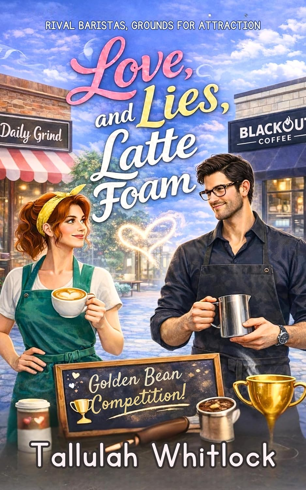

WELCOME TO MY WORLD
Hi, I'm Tallulah. I write immersive fiction filled with heart, complex characters, and worlds you can completely lose yourself in.

LATEST RELEASE
Dive into my most recent adventure, now streaming across all digital platforms.
This is where you can write a captivating summary or blurb of your novel! Tell your readers about the stakes, the main romance or conflict, and what makes this story special.
EXPLORE MY WORKS
COMPLETED SERIES
A sweeping 3-book adventure that follows a cast of unforgettable characters fighting against the odds.
WORK IN PROGRESS
A cozy standalone novel full of witty banter, coffee shop dates, and new beginnings.
RELEASING 2027Welcome! I'm an independent author based out of my favorite writing spot with a hot mug of coffee. Writing has always been my passion, and nothing makes me happier than sharing these adventures with readers across the globe.
When I'm not drafting my next manuscript, you can find me curled up with a massive fantasy book, exploring nature paths, or arguing with my pets.